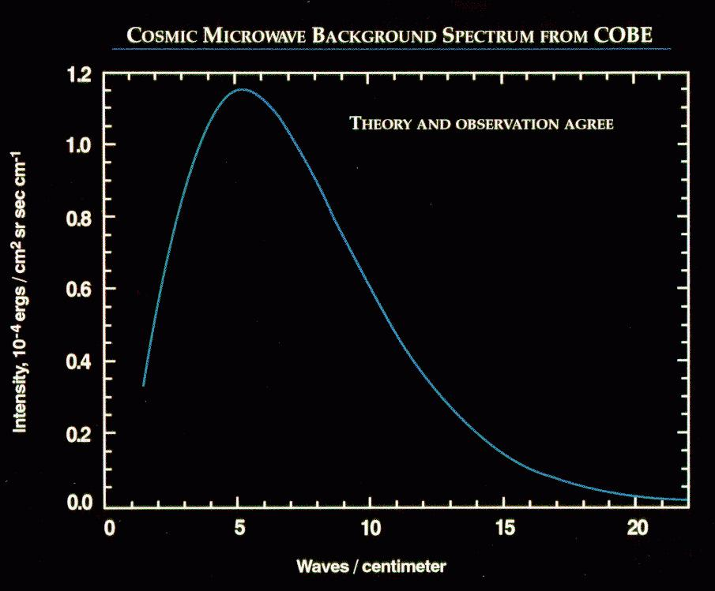

A blackbody is an idealized object that absorbs all electromagnetic radiation incident upon it at every wavelength. In thermal equilibrium at a given temperature, a blackbody emits blackbody radiation with a characteristic spectrum that depends only on temperature, not on material, shape, or surface properties. No real object is a perfect blackbody, but materials such as graphite and lamp black approximate ideal behavior with emissivities exceeding 0.95. In the laboratory, scientists reproduce blackbody radiation using a hohlraum—a small hole drilled in a large isothermal cavity. Radiation entering the hole undergoes multiple internal reflections, achieving nearly complete absorption regardless of wavelength.

Credit: NASA/GSFC LAMBDA
Effective temperature relates directly to frequency content. Stars, though not perfect blackbodies, are often approximated as such for determining surface temperature. Wilhelm Wien derived in 1893 that the peak wavelength of blackbody emission is inversely proportional to absolute temperature: the cooler star Betelgeuse, at 3,800 K, emits predominantly infrared light, while the Sun, at 5,778 K, peaks near 500 nanometers in visible green light. The Stefan-Boltzmann law states that total radiant power is proportional to temperature to the fourth power, explaining why hot objects dominate radiation in mixed-temperature systems.
Max Planck's solution to blackbody radiation in 1900—proposing that energy is emitted in discrete quanta proportional to frequency—marked the birth of quantum mechanics. Planck's law correctly predicts the observed spectrum at all frequencies, solving the classical physics failure known as the ultraviolet catastrophe. The cosmic microwave background, the thermal afterglow of the Big Bang, exhibits the most perfect blackbody spectrum ever measured in nature. The COBE satellite's FIRAS instrument measured the CMB temperature as 2.72548 ± 0.00057 K, matching a perfect blackbody spectrum to better than 1 part in 10,000. This precision anchors modern cosmology and confirms the Big Bang model.